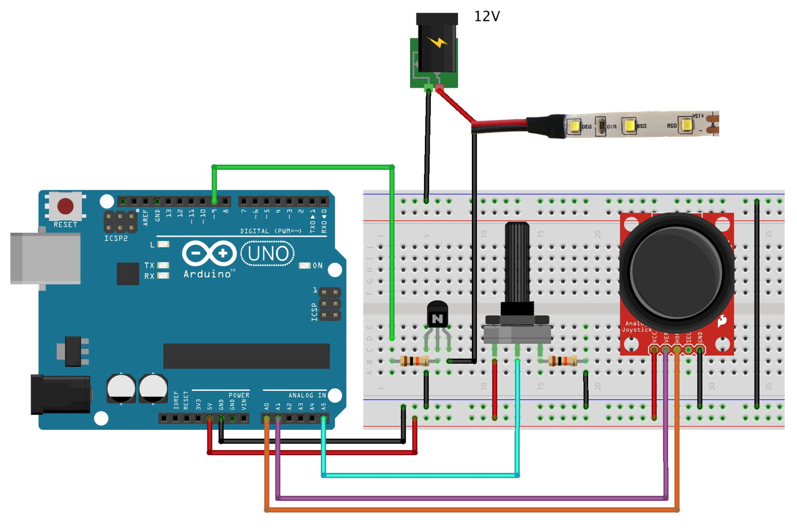
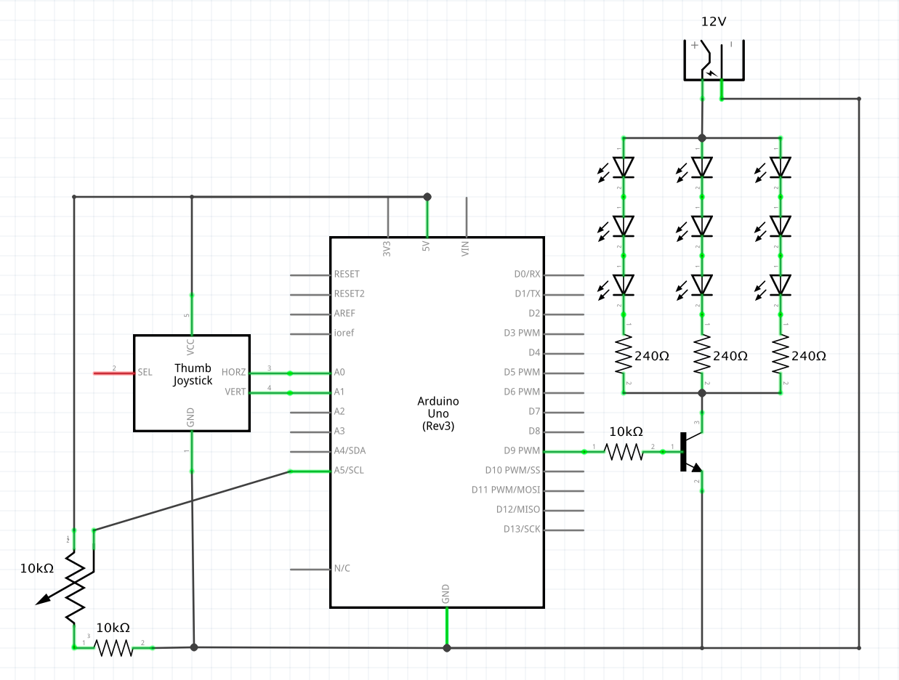

Timothy's Assignment 7!

Hardware
- Arduino Uno
- Potentiometer
- 2 10K resistors
- Joystick
- LED strip
- NPN transistor
- Hook-up wires
- Breadboard
- Power supply
Circuit
Schematic
For the potentiometer, I use a 10K resistor becuase there is a possibility for power to be connected directly to ground supposing the potentiometer was turned all the way to one side.
Code for Arduino
void setup() {
Serial.begin(9600); // opens serial port, sets data rate to 9600 bps
}
void loop() {
int s0 = analogRead(0); // set s0 to value read analog pin 0
delay(1); // stabilize analog to digital convertor before it does another read
int s1 = analogRead(1); // set s1 to value read analog pin 1 (x value of joystick)
delay(1); // stabilize analog to digital convertor before it does another read
int s2 = analogRead(5); // set s2 to value read analog pin 5 (y value of joystick)
delay(1); // stabilize analog to digital convertor before it does another read
// make array
Serial.print("["); // print bracket
Serial.print(s1); // print s1
Serial.print(" ,"); // print comma
Serial.print(s0); // print s0
Serial.print(" ,"); // print comma
Serial.print(s2); // print s2
Serial.println("]"); // print bracket to make array
if (Serial.available() > 0) { // if there is serial output available,
int inputValue = Serial.read(); // read it into a variable
analogWrite(9, inputValue); // use variable to set LED value
}
}
Sketch.js
var serial; // variable to hold an instance of the serialport library
var portName = '/dev/cu.usbmodem14301' // rename to the name of your port
var diameter = 10; // set circle size to 10
var xVal = 0; // set xVal (ellipse x position) to 0
var yVal = 0; // set yVal (ellipse y position) to 0
function setup() {
serial = new p5.SerialPort(); // make a new instance of the serialport library
serial.on('list', printList); // set a callback function for the serialport list event
serial.on('connected', serverConnected); // callback for connecting to the server
serial.on('open', portOpen); // callback for the port opening
serial.on('data', serialEvent); // callback for when new data arrives
serial.on('error', serialError); // callback for errors
serial.on('close', portClose); // callback for the port closing
serial.list(); // list the serial ports
serial.open(portName); // open a serial port
createCanvas(1440, 800); // create background of 1440 by 900
}
function printList(portList) { // get the list of ports
for (var i = 0; i < portList.length; i++) { // portList is an array of serial port names
print(i + " " + portList[i]); // Display the list the console:
}
}
function serverConnected() { // new function to respond to callback of serverConnected
print('connected to server.'); // notification
}
function portOpen() { // new function to respond to callback of portOpen
print('the serial port opened.'); // notification
}
function serialError(err) { // new function to respond to callback of serialError
print('Serial port error ' + err); // notification
}
function portClose() { // new function to respond to callback of portClose
print('The serial port closed.'); // notification
}
function serialEvent() { // new function to respond to callback of serialEvent when new data arrives
if (serial.available()) { // if there's serial available
var datastring = serial.readLine(); // read in a line from serial
var newarray;
try {
newarray = JSON.parse(datastring); // can we parse the serial
}
catch(err) { // capture the error, if there is one
console.log(err); // log error to console
}
if (typeof(newarray) == 'object') { // check type of newarray, if it's an array object
xVal = newarray[0]; // update xVal to array item at index 0
yVal = newarray[1]; // update yVal to array item at index 1
diameter = newarray[2]; // update diameter to array item at index 2
}
console.log("got back " + datastring); // log datastring (line from serial) to console
}
}
function draw() { // function draw to draw a circle
background("#004488"); // blue background
fill("#44AAFF"); // light blue fill
noStroke(); // no border
xVal = map(xVal, 0, 1024, 0, width); // map xVal to width of canvas
yVal = map(yVal, 0, 1024, 0, height); // map yVal to height of canvas
ellipse(xVal, yVal, diameter/2, diameter/2); // draw circle with xVal position, yVal position, and circle with diameter (diameter divided by 2 as original diameter was too big)
}
function mouseDragged() { // function to get mouse position
serial.write(mouseY); // write mouseY value
console.log("mouseY at: " + mouseY) // log mouseY value to console
}